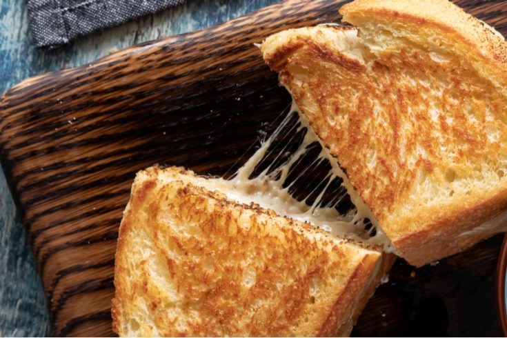

Texas Toast Grilled Cheese

Texas toast with a chunk of cheese in the middle, what's not to love?
Grilled cheese is one of the most recognizable american lunches. Since
it's such a great staple, that begs the question. How can we take this
even further?
In my opinion, we build up. Grab a loaf of texas toast, bags full of your
favorite cheese, a little mayo, some parmesan, and let's stack up
something monsterous!
Ingredients:
- Two slices of texas toast
- Four slices of munster cheese
- One handful of mozzerella cheese
- Four slices of pepperjack cheese
- One handful of cheddar cheese
- Two tablespoons of mayonase
- Two teaspoons of parmesan